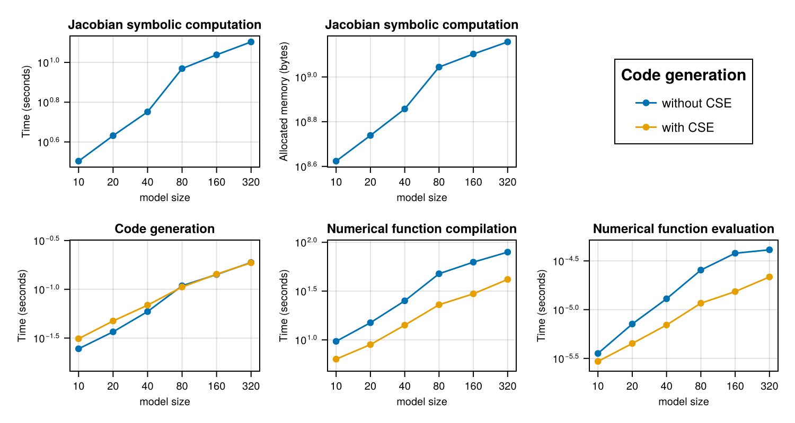

BCR Symbolic Jacobian
The following benchmark is of 1122 ODEs, generated from 24388 reactions, that describe a stiff chemical reaction network modeling the BCR signaling network from Barua et al.. We use ReactionNetworkImporters to load the BioNetGen model files as a Catalyst model, and then use ModelingToolkit to convert the Catalyst network model to ODEs.
The resultant large model is used to benchmark the time taken to compute a symbolic Jacobian, generate a function to calculate it and call the function.
Jacobian construction uses the current Symbolics.sparsejacobian implementation, with derivative caches cleared before each sample. CSE is a build_function code-generation option, so only the code-generation and generated-function measurements compare CSE off and on.
using Catalyst, ReactionNetworkImporters,
TimerOutputs, LinearAlgebra, ModelingToolkit, Chairmarks,
LinearSolve, Symbolics, SymbolicUtils.Code, SparseArrays, CairoMakie,
PrettyTables
using SymbolicIndexingInterface: default_values
datadir = joinpath(dirname(pathof(ReactionNetworkImporters)),"../data/bcr")
const to = TimerOutput()
tf = 100000.0
# generate ModelingToolkit ODEs
rn_raw = loadrxnetwork(BNGNetwork(), joinpath(datadir, "bcr.net"))
show(to)
rn = complete(rn_raw; split = false)
obs = [eq.lhs for eq in observed(rn)]
osys = Catalyst.ode_model(rn)
rhs = [eq.rhs for eq in full_equations(osys)]
vars = unknowns(osys)
pars = parameters(osys)Scanning blocks...done
Parsing parameters...done
Creating parameters...done
Parsing species...done
Creating variables...done
Setting up expression bindings...done
Parsing groups...done
Parsing functions...done
Parsing and adding reactions...done
────────────────────────────────────────────────────────────────────
Time Allocations
─────────────────────── ────────────────────────
Tot / % measured: 26.5s / 0.0% 1.55GiB / 0.0%
Section ncalls time %tot avg alloc %tot avg
────────────────────────────────────────────────────────────────────
────────────────────────────────────────────────────────────────────128-ele
ment Vector{SymbolicUtils.BasicSymbolicImpl.var"typeof(BasicSymbolicImpl)"{
SymbolicUtils.SymReal}}:
p1
p2
p3
p4
p5
p6
p7
p8
p9
p10
⋮
_rateLaw2
_rateLaw3
_rateLaw4
_rateLaw5
_rateLaw6
_rateLaw7
_rateLaw8
_rateLaw9
_rateLaw10Symbolics.clear_derivative_caches!()
@timeit to "Calculate symbolic jacobian" jac = Symbolics.sparsejacobian(rhs, vars);
args = (vars, pars, ModelingToolkit.get_iv(osys))
# out of place versions run into an error saying the expression is too large
# due to the `SymbolicUtils.Code.create_array` call. `iip_config` prevents it
# from trying to build the function.
kwargs = (; iip_config = (false, true), expression = Val{true})
@timeit to "Build jacobian - no CSE" _, jac_nocse_iip = build_function(jac, args...; cse = false, kwargs...);
@timeit to "Build jacobian - CSE" _, jac_cse_iip = build_function(jac, args...; cse = true, kwargs...);
jac_nocse_iip = eval(jac_nocse_iip)
jac_cse_iip = eval(jac_cse_iip)
defs = default_values(osys)
u = Float64[Symbolics.value(Symbolics.fixpoint_sub(var, defs)) for var in vars]
buffer_cse = similar(jac, Float64)
buffer_nocse = similar(jac, Float64)
p = Float64[Symbolics.value(Symbolics.fixpoint_sub(par, defs)) for par in pars]
tt = 0.0
@timeit to "Compile jacobian - CSE" jac_cse_iip(buffer_cse, u, p, tt)
@timeit to "Compute jacobian - CSE" jac_cse_iip(buffer_cse, u, p, tt)
@timeit to "Compile jacobian - no CSE" jac_nocse_iip(buffer_nocse, u, p, tt)
@timeit to "Compute jacobian - no CSE" jac_nocse_iip(buffer_nocse, u, p, tt)
@assert isapprox(buffer_cse, buffer_nocse, rtol = 1e-10)
show(to)───────────────────────────────────────────────────────────────────────────
─────────────
Time Allo
cations
─────────────────────── ───────────
─────────────
Tot / % measured: 383s / 78.8% 17.3GiB
/ 72.8%
Section ncalls time %tot avg alloc
%tot avg
───────────────────────────────────────────────────────────────────────────
─────────────
Compile jacobian - no CSE 1 167s 55.5% 167s 6.60GiB 5
2.3% 6.60GiB
Compile jacobian - CSE 1 94.4s 31.3% 94.4s 1.88GiB 1
4.9% 1.88GiB
Calculate symbolic jacobian 1 28.6s 9.5% 28.6s 2.93GiB 2
3.2% 2.93GiB
Build jacobian - no CSE 1 10.7s 3.5% 10.7s 1.09GiB
8.6% 1.09GiB
Build jacobian - CSE 1 528ms 0.2% 528ms 125MiB
1.0% 125MiB
Compute jacobian - no CSE 1 116μs 0.0% 116μs 176B
0.0% 176B
Compute jacobian - CSE 1 86.1μs 0.0% 86.1μs 176B
0.0% 176B
───────────────────────────────────────────────────────────────────────────
─────────────We'll also measure scaling.
function run_and_time_construct!(rhs, vars, pars, iv, N, i, jac_times, jac_allocs, build_times, functions)
outputs = rhs[1:N]
jac_result = @be (Symbolics.clear_derivative_caches!(); Symbolics.sparsejacobian(outputs, vars))
jac_times[i] = minimum(x -> x.time, jac_result.samples)
jac_allocs[i] = minimum(x -> x.bytes, jac_result.samples)
Symbolics.clear_derivative_caches!()
jac = Symbolics.sparsejacobian(outputs, vars)
args = (vars, pars, iv)
kwargs = (; iip_config = (false, true), expression = Val{true})
build_result = @be build_function(jac, args...; cse = false, kwargs...);
build_times[1][i] = minimum(x -> x.time, build_result.samples)
jacfn_nocse = eval(build_function(jac, args...; cse = false, kwargs...)[2])
build_result = @be build_function(jac, args...; cse = true, kwargs...);
build_times[2][i] = minimum(x -> x.time, build_result.samples)
jacfn_cse = eval(build_function(jac, args...; cse = true, kwargs...)[2])
functions[1][i] = let buffer = similar(jac, Float64), fn = jacfn_nocse
function nocse(u, p, t)
fn(buffer, u, p, t)
buffer
end
end
functions[2][i] = let buffer = similar(jac, Float64), fn = jacfn_cse
function cse(u, p, t)
fn(buffer, u, p, t)
buffer
end
end
return nothing
end
function run_and_time_call!(i, u, p, tt, functions, first_call_times, second_call_times)
jacfn_nocse = functions[1][i]
jacfn_cse = functions[2][i]
call_result = @timed jacfn_nocse(u, p, tt)
first_call_times[1][i] = call_result.time
call_result = @timed jacfn_cse(u, p, tt)
first_call_times[2][i] = call_result.time
call_result = @be jacfn_nocse(u, p, tt)
second_call_times[1][i] = minimum(x -> x.time, call_result.samples)
call_result = @be jacfn_cse(u, p, tt)
second_call_times[2][i] = minimum(x -> x.time, call_result.samples)
endrun_and_time_call! (generic function with 1 method)Run benchmark
Chairmarks.DEFAULTS.seconds = 15.0
N = [10, 20, 40, 80, 160, 320]
jacobian_times = zeros(Float64, length(N))
jacobian_allocs = similar(jacobian_times)
functions = [Vector{Any}(undef, length(N)), Vector{Any}(undef, length(N))]
# [without_cse_times, with_cse_times]
build_times = [similar(jacobian_times), similar(jacobian_times)]
first_call_times = copy.(build_times)
second_call_times = copy.(build_times)
iv = ModelingToolkit.get_iv(osys)
run_and_time_construct!(rhs, vars, pars, iv, 10, 1, jacobian_times, jacobian_allocs, build_times, functions)
run_and_time_call!(1, u, p, tt, functions, first_call_times, second_call_times)
for (i, n) in enumerate(N)
@info i n
run_and_time_construct!(rhs, vars, pars, iv, n, i, jacobian_times, jacobian_allocs, build_times, functions)
end
for (i, n) in enumerate(N)
@info i n
run_and_time_call!(i, u, p, tt, functions, first_call_times, second_call_times)
endPlot figures
tabledata = hcat(N, jacobian_times, jacobian_allocs, build_times..., first_call_times..., second_call_times...)
header = ["N", "Jacobian time", "Jacobian allocated memory (B)", "`build_function` time (no CSE)", "`build_function` time (CSE)", "First call time (no CSE)", "First call time (CSE)", "Second call time (no CSE)", "Second call time (CSE)"]
pretty_table(tabledata; column_labels = header, backend = :html)<table> <thead> <tr class = "columnLabelRow"> <th style = "font-weight: bold; text-align: right;">N</th> <th style = "font-weight: bold; text-align: right;">Jacobian time</th> <th style = "font-weight: bold; text-align: right;">Jacobian allocated memory (B)</th> <th style = "font-weight: bold; text-align: right;">build_function time (no CSE)</th> <th style = "font-weight: bold; text-align: right;">build_function time (CSE)</th> <th style = "font-weight: bold; text-align: right;">First call time (no CSE)</th> <th style = "font-weight: bold; text-align: right;">First call time (CSE)</th> <th style = "font-weight: bold; text-align: right;">Second call time (no CSE)</th> <th style = "font-weight: bold; text-align: right;">Second call time (CSE)</th> </tr> </thead> <tbody> <tr class = "dataRow"> <td style = "text-align: right;">10.0</td> <td style = "text-align: right;">3.16736</td> <td style = "text-align: right;">4.20466e8</td> <td style = "text-align: right;">0.0255317</td> <td style = "text-align: right;">0.0320239</td> <td style = "text-align: right;">9.56757</td> <td style = "text-align: right;">6.37553</td> <td style = "text-align: right;">3.55863e-6</td> <td style = "text-align: right;">2.755e-6</td> </tr> <tr class = "dataRow"> <td style = "text-align: right;">20.0</td> <td style = "text-align: right;">4.29438</td> <td style = "text-align: right;">5.47666e8</td> <td style = "text-align: right;">0.0374857</td> <td style = "text-align: right;">0.04865</td> <td style = "text-align: right;">14.6549</td> <td style = "text-align: right;">8.83144</td> <td style = "text-align: right;">6.92225e-6</td> <td style = "text-align: right;">4.34317e-6</td> </tr> <tr class = "dataRow"> <td style = "text-align: right;">40.0</td> <td style = "text-align: right;">5.60156</td> <td style = "text-align: right;">7.19478e8</td> <td style = "text-align: right;">0.062568</td> <td style = "text-align: right;">0.0698242</td> <td style = "text-align: right;">25.682</td> <td style = "text-align: right;">14.1961</td> <td style = "text-align: right;">1.25245e-5</td> <td style = "text-align: right;">6.9525e-6</td> </tr> <tr class = "dataRow"> <td style = "text-align: right;">80.0</td> <td style = "text-align: right;">9.40649</td> <td style = "text-align: right;">1.10723e9</td> <td style = "text-align: right;">0.112693</td> <td style = "text-align: right;">0.113199</td> <td style = "text-align: right;">46.2921</td> <td style = "text-align: right;">22.4312</td> <td style = "text-align: right;">2.8309e-5</td> <td style = "text-align: right;">1.1585e-5</td> </tr> <tr class = "dataRow"> <td style = "text-align: right;">160.0</td> <td style = "text-align: right;">11.0426</td> <td style = "text-align: right;">1.26649e9</td> <td style = "text-align: right;">0.149005</td> <td style = "text-align: right;">0.142292</td> <td style = "text-align: right;">61.4989</td> <td style = "text-align: right;">30.6344</td> <td style = "text-align: right;">3.21e-5</td> <td style = "text-align: right;">1.541e-5</td> </tr> <tr class = "dataRow"> <td style = "text-align: right;">320.0</td> <td style = "text-align: right;">12.7192</td> <td style = "text-align: right;">1.43458e9</td> <td style = "text-align: right;">0.197624</td> <td style = "text-align: right;">0.182199</td> <td style = "text-align: right;">79.0555</td> <td style = "text-align: right;">42.2992</td> <td style = "text-align: right;">3.6749e-5</td> <td style = "text-align: right;">1.991e-5</td> </tr> </tbody> </table>
f = Figure(size = (750, 400))
titles = [
"Jacobian symbolic computation", "Jacobian symbolic computation", "Code generation",
"Numerical function compilation", "Numerical function evaluation"]
labels = ["Time (seconds)", "Allocated memory (bytes)",
"Time (seconds)", "Time (seconds)", "Time (seconds)"]
times = [jacobian_times, jacobian_allocs, build_times, first_call_times, second_call_times]
axes = Axis[]
for i in 1:2
label = labels[i]
data = times[i]
ax = Axis(f[1, i], xscale = log10, yscale = log10, xlabel = "model size",
xlabelsize = 10, ylabel = label, ylabelsize = 10, xticks = N,
title = titles[i], titlesize = 12, xticklabelsize = 10, yticklabelsize = 10)
push!(axes, ax)
scatterlines!(ax, N, data)
end
axes2 = Axis[]
# make equal y-axis unit length
mn3, mx3 = extrema(reduce(vcat, times[3]))
xn3 = log10(mx3 / mn3)
mn4, mx4 = extrema(reduce(vcat, times[4]))
xn4 = log10(mx4 / mn4)
mn5, mx5 = extrema(reduce(vcat, times[5]))
xn5 = log10(mx5 / mn5)
xn = max(xn3, xn4, xn5)
xn += 0.2
hxn = xn / 2
hxn3 = (log10(mx3) + log10(mn3)) / 2
hxn4 = (log10(mx4) + log10(mn4)) / 2
hxn5 = (log10(mx5) + log10(mn5)) / 2
ylims = [(exp10(hxn3 - hxn), exp10(hxn3 + hxn)), (exp10(hxn4 - hxn), exp10(hxn4 + hxn)),
(exp10(hxn5 - hxn), exp10(hxn5 + hxn))]
for i in 1:3
ir = i + 2
label = labels[ir]
data = times[ir]
ax = Axis(f[2, i], xscale = log10, yscale = log10, xlabel = "model size",
xlabelsize = 10, ylabel = label, ylabelsize = 10, xticks = N,
title = titles[ir], titlesize = 12, xticklabelsize = 10, yticklabelsize = 10)
ylims!(ax, ylims[i]...)
push!(axes2, ax)
scatterlines!(ax, N, data[1], label = "without CSE")
scatterlines!(ax, N, data[2], label = "with CSE")
end
Legend(f[1, 3], axes2[1], "Code generation", tellwidth = false, labelsize = 12, titlesize = 15)
save("bcr.pdf", f)
f
Appendix
These benchmarks are a part of the SciMLBenchmarks.jl repository, found at: https://github.com/SciML/SciMLBenchmarks.jl. For more information on high-performance scientific machine learning, check out the SciML Open Source Software Organization https://sciml.ai.
To locally run this benchmark, do the following commands:
using SciMLBenchmarks
SciMLBenchmarks.weave_file("benchmarks/Symbolics","BCR.jmd")Computer Information:
Julia Version 1.13.0
Commit d1c37793dd2 (2026-09-09 19:00 UTC)
Build Info:
Official https://julialang.org release
Platform Info:
OS: Linux (x86_64-linux-gnu)
CPU: 128 × AMD EPYC 7502 32-Core Processor
WORD_SIZE: 64
LLVM: libLLVM-20.1.8 (ORCJIT, znver2)
GC: Built with stock GC
Threads: 128 default, 1 interactive, 128 GC (on 128 virtual cores)
Environment:
JULIA_NUM_THREADS = auto
Package Information:
Status `/julia/github-runners/amdci1-1/_work/SciMLBenchmarks.jl/SciMLBenchmarks.jl/benchmarks/Symbolics/Project.toml`
[6e4b80f9] BenchmarkTools v1.8.0
⌃ [13f3f980] CairoMakie v0.15.14
[479239e8] Catalyst v16.4.3
[0ca39b1e] Chairmarks v1.3.1
⌃ [992eb4ea] CondaPkg v0.2.33
[864edb3b] DataStructures v0.19.6
⌃ [7ed4a6bd] LinearSolve v5.17.3
⌃ [961ee093] ModelingToolkit v11.43.1
⌅ [bac558e1] OrderedCollections v1.8.2 [loaded: v2.0.1]
[1dea7af3] OrdinaryDiffEq v7.8.1
[91a5bcdd] Plots v1.41.7
[f27b6e38] Polynomials v4.1.3
[08abe8d2] PrettyTables v3.4.8
⌃ [6099a3de] PythonCall v0.9.35
[b4db0fb7] ReactionNetworkImporters v1.5.0
[31c91b34] SciMLBenchmarks v0.2.1 [loaded: `/julia/github-runners/amdci1-1/_work/SciMLBenchmarks.jl/SciMLBenchmarks.jl/src/SciMLBenchmarks.jl` (v0.2.1) expected `/home/crackauc/.julia/packages/SciMLBenchmarks/ceJyd/src/SciMLBenchmarks.jl` (v0.2.1)]
[10745b16] Statistics v1.11.5
[123dc426] SymEngine v0.13.2
[2efcf032] SymbolicIndexingInterface v0.3.55
⌃ [d1185830] SymbolicUtils v4.46.6
⌃ [0c5d862f] Symbolics v7.39.2
⌅ [a759f4b9] TimerOutputs v0.5.29
[95ff35a0] XSteam v0.3.0
[37e2e46d] LinearAlgebra v1.13.0
[9a3f8284] Random v1.11.0
[2f01184e] SparseArrays v1.13.0
Info Packages marked with ⌃ and ⌅ have new versions available. Those with ⌃ may be upgradable, but those with ⌅ are restricted by compatibility constraints from upgrading. To see why use `status --outdated`And the full manifest:
Status `/julia/github-runners/amdci1-1/_work/SciMLBenchmarks.jl/SciMLBenchmarks.jl/benchmarks/Symbolics/Manifest.toml`
[47edcb42] ADTypes v1.24.0
[14f7f29c] AMD v0.5.4
[621f4979] AbstractFFTs v1.5.0
[6e696c72] AbstractPlutoDingetjes v1.4.1
[1520ce14] AbstractTrees v0.4.5
[7d9f7c33] Accessors v0.1.45
⌃ [79e6a3ab] Adapt v4.7.0
[35492f91] AdaptivePredicates v1.2.0
[66dad0bd] AliasTables v1.1.3
[27a7e980] Animations v0.4.2
[ec485272] ArnoldiMethod v0.4.0
⌃ [4fba245c] ArrayInterface v7.30.1
⌃ [4c555306] ArrayLayouts v1.12.2
[67c07d97] Automa v1.2.0
[13072b0f] AxisAlgorithms v1.1.0
[39de3d68] AxisArrays v0.4.8
⌃ [aae01518] BandedMatrices v1.12.0
[18cc8868] BaseDirs v1.4.0
[6e4b80f9] BenchmarkTools v1.8.0
[e2ed5e7c] Bijections v0.2.2
[b2a6c25c] BinaryHeaps v1.1.0
[caf10ac8] BipartiteGraphs v0.1.14
[8e7c35d0] BlockArrays v1.10.0
[70df07ce] BracketingNonlinearSolve v1.12.7
[fa961155] CEnum v0.5.0
[96374032] CRlibm v1.0.2
[159f3aea] Cairo v1.1.1
⌃ [13f3f980] CairoMakie v0.15.14
[479239e8] Catalyst v16.4.3
[d360d2e6] ChainRulesCore v1.26.1
[0ca39b1e] Chairmarks v1.3.1
[6b39b394] CodecZstd v0.8.7
[a2cac450] ColorBrewer v0.4.2
[35d6a980] ColorSchemes v3.31.0
⌃ [3da002f7] ColorTypes v0.12.1
[c3611d14] ColorVectorSpace v0.11.0
[5ae59095] Colors v0.13.1
⌅ [861a8166] Combinatorics v1.0.2
[38540f10] CommonSolve v0.2.14
[bbf7d656] CommonSubexpressions v0.3.1
[f70d9fcc] CommonWorldInvalidations v1.2.2
[34da2185] Compat v4.18.1
[b152e2b5] CompositeTypes v0.1.4
[a33af91c] CompositionsBase v0.1.2
[95dc2771] ComputePipeline v0.1.8
[2569d6c7] ConcreteStructs v0.2.8
⌃ [992eb4ea] CondaPkg v0.2.33
[187b0558] ConstructionBase v1.6.0
[d38c429a] Contour v0.6.3
[b7a15901] CoreMath v0.1.0
[a8cc5b0e] Crayons v4.2.0
[9a962f9c] DataAPI v1.16.0
[864edb3b] DataStructures v0.19.6
[e2d170a0] DataValueInterfaces v1.0.0
[927a84f5] DelaunayTriangulation v1.6.7
[8bb1440f] DelimitedFiles v1.9.1
⌃ [2b5f629d] DiffEqBase v7.21.1
[459566f4] DiffEqCallbacks v4.19.4
[163ba53b] DiffResults v1.1.0
[b552c78f] DiffRules v1.16.0
[a0c0ee7d] DifferentiationInterface v0.7.21
⌃ [8d63f2c5] DispatchDoctor v0.4.28
[31c24e10] Distributions v0.25.131
[ffbed154] DocStringExtensions v0.9.5
⌃ [5b8099bc] DomainSets v0.8.1
[7c1d4256] DynamicPolynomials v0.6.8
[06fc5a27] DynamicQuantities v1.13.0
[4e289a0a] EnumX v1.0.7
[f151be2c] EnzymeCore v0.8.21
[429591f6] ExactPredicates v2.2.9
[e2ba6199] ExprTools v0.1.11
[55351af7] ExproniconLite v0.10.14
[c87230d0] FFMPEG v0.4.5
[b86e33f2] FFTA v0.3.1
[7034ab61] FastBroadcast v1.4.0
[9aa1b823] FastClosures v0.3.2
[a4df4552] FastPower v1.5.0
[5789e2e9] FileIO v1.20.0
[8fc22ac5] FilePaths v0.9.0
[48062228] FilePathsBase v0.9.24
[1a297f60] FillArrays v1.17.0
⌃ [64ca27bc] FindFirstFunctions v3.2.1
[6a86dc24] FiniteDiff v2.33.0
⌅ [53c48c17] FixedPointNumbers v0.8.6
[1fa38f19] Format v1.3.7
[f6369f11] ForwardDiff v1.4.6
[b38be410] FreeType v4.1.1
[663a7486] FreeTypeAbstraction v0.10.8
[a85aefff] FunctionMaps v0.1.2
[069b7b12] FunctionWrappers v1.1.3
[77dc65aa] FunctionWrappersWrappers v1.13.0
[46192b85] GPUArraysCore v0.2.0
[28b8d3ca] GR v0.73.27
[a0844989] Gamma v1.2.0
⌃ [5c1252a2] GeometryBasics v0.5.12
[a2bd30eb] Graphics v1.1.3
[86223c79] Graphs v1.15.0
[3955a311] GridLayoutBase v0.11.3
⌅ [eafb193a] Highlights v0.5.3
[34004b35] HypergeometricFunctions v0.3.30
[2803e5a7] ImageAxes v0.6.12
[c817782e] ImageBase v0.1.7
[a09fc81d] ImageCore v0.10.5
[82e4d734] ImageIO v0.6.10
[bc367c6b] ImageMetadata v0.9.10
[3263718b] ImplicitDiscreteSolve v2.3.0
[9b13fd28] IndirectArrays v1.0.0
[d25df0c9] Inflate v0.1.5
[18e54dd8] IntegerMathUtils v0.1.4
[a98d9a8b] Interpolations v0.16.3
[d1acc4aa] IntervalArithmetic v1.0.12
[8197267c] IntervalSets v0.7.14
[3587e190] InverseFunctions v0.1.17
[92d709cd] IrrationalConstants v0.2.6
[f1662d9f] Isoband v0.1.1
[c8e1da08] IterTools v1.10.0
[82899510] IteratorInterfaceExtensions v1.0.0
[1019f520] JLFzf v0.1.11
[692b3bcd] JLLWrappers v1.8.0
⌅ [682c06a0] JSON v0.21.4
[0f8b85d8] JSON3 v1.14.3 [deprecated]
[ae98c720] Jieko v0.2.1
[b835a17e] JpegTurbo v0.1.6
⌃ [ccbc3e58] JumpProcesses v9.32.3
[5ab0869b] KernelDensity v0.6.12
[ba0b0d4f] Krylov v0.10.10
[2faa5264] LHLFactorization v2.2.2
[b964fa9f] LaTeXStrings v1.4.1
[23fbe1c1] Latexify v0.16.12
[8cdb02fc] LazyModules v0.3.1
[87fe0de2] LineSearch v0.1.18
⌃ [7ed4a6bd] LinearSolve v5.17.3
[2ab3a3ac] LogExpFunctions v1.0.1
[e6f89c97] LoggingExtras v1.2.0
[1914dd2f] MacroTools v0.5.16
⌅ [ee78f7c6] Makie v0.24.14
[dbb5928d] MappedArrays v0.4.3
[0a4f8689] MathTeXEngine v0.6.9
[bb5d69b7] MaybeInplace v0.1.8
[442fdcdd] Measures v0.3.3
[0b3b1443] MicroMamba v0.1.15
[e1d29d7a] Missings v1.2.0
⌃ [961ee093] ModelingToolkit v11.43.1
⌃ [7771a370] ModelingToolkitBase v1.70.0
[6bb917b9] ModelingToolkitTearing v1.20.6
[e94cdb99] MosaicViews v0.3.4
⌅ [2e0e35c7] Moshi v0.3.9
[46d2c3a1] MuladdMacro v0.2.7
⌃ [102ac46a] MultivariatePolynomials v0.5.19
[ffc61752] Mustache v1.0.21
⌃ [d8a4904e] MutableArithmetics v1.8.0
[77ba4419] NaNMath v1.1.4
[f09324ee] Netpbm v1.1.1
⌃ [8913a72c] NonlinearSolve v4.30.0
⌃ [be0214bd] NonlinearSolveBase v2.48.0
⌃ [5959db7a] NonlinearSolveFirstOrder v2.6.1
[9a2c21bd] NonlinearSolveQuasiNewton v1.15.3
[26075421] NonlinearSolveSpectralMethods v1.8.3
[510215fc] Observables v0.5.5
[6fe1bfb0] OffsetArrays v1.17.0
[52e1d378] OpenEXR v0.3.3
⌅ [bac558e1] OrderedCollections v1.8.2 [loaded: v2.0.1]
[1dea7af3] OrdinaryDiffEq v7.8.1
⌃ [6ad6398a] OrdinaryDiffEqBDF v2.4.9
⌃ [bbf590c4] OrdinaryDiffEqCore v4.17.2
[50262376] OrdinaryDiffEqDefault v2.6.2
⌃ [4302a76b] OrdinaryDiffEqDifferentiation v3.12.0
[127b3ac7] OrdinaryDiffEqNonlinearSolve v2.9.8
⌃ [43230ef6] OrdinaryDiffEqRosenbrock v2.7.3
[b4bd8bb3] OrdinaryDiffEqRosenbrockTableaus v2.4.2
⌃ [2d112036] OrdinaryDiffEqSDIRK v2.9.4
[b1df2697] OrdinaryDiffEqTsit5 v2.1.4
[79d7bb75] OrdinaryDiffEqVerner v2.4.1
[90014a1f] PDMats v0.11.41
[f57f5aa1] PNGFiles v0.4.5
[19eb6ba3] Packing v0.5.1
[5432bcbf] PaddedViews v0.5.12
[d96e819e] Parameters v0.13.1
⌅ [69de0a69] Parsers v2.8.8
[fa939f87] Pidfile v1.3.0
[eebad327] PkgVersion v0.3.3
[ccf2f8ad] PlotThemes v3.3.0
⌃ [995b91a9] PlotUtils v1.4.4
[91a5bcdd] Plots v1.41.7
[e409e4f3] PoissonRandom v0.4.13
[647866c9] PolygonOps v0.1.2
[f27b6e38] Polynomials v4.1.3
[d236fae5] PreallocationTools v1.7.1
[aea7be01] PrecompileTools v1.3.4
[21216c6a] Preferences v1.6.0
[08abe8d2] PrettyTables v3.4.8
[27ebfcd6] Primes v0.5.7
[92933f4c] ProgressMeter v1.11.0
[43287f4e] PtrArrays v1.4.0
⌃ [0c0d3e7f] PureKLU v1.5.0
⌃ [6099a3de] PythonCall v0.9.35
[4b34888f] QOI v1.0.2
[1fd47b50] QuadGK v2.11.3
[b3c3ace0] RangeArrays v0.3.2
[c84ed2f1] Ratios v0.4.5
[b4db0fb7] ReactionNetworkImporters v1.5.0
[988b38a3] ReadOnlyArrays v0.2.0
[795d4caa] ReadOnlyDicts v1.0.1
[3cdcf5f2] RecipesBase v1.3.4
[01d81517] RecipesPipeline v0.6.12
⌃ [731186ca] RecursiveArrayTools v4.5.1
[189a3867] Reexport v1.2.2
[05181044] RelocatableFolders v1.0.1
[ae029012] Requires v1.3.1
[9fe22ead] RespecializeParams v1.3.0
[79098fc4] Rmath v0.9.0
[f2b01f46] Roots v3.0.8
[5eaf0fd0] RoundingEmulator v0.2.1
[7e49a35a] RuntimeGeneratedFunctions v0.5.26
[9dfe8606] SCCNonlinearSolve v1.15.3
[fdea26ae] SIMD v3.7.2
⌃ [0bca4576] SciMLBase v3.54.0
[31c91b34] SciMLBenchmarks v0.2.1 [loaded: `/julia/github-runners/amdci1-1/_work/SciMLBenchmarks.jl/SciMLBenchmarks.jl/src/SciMLBenchmarks.jl` (v0.2.1) expected `/home/crackauc/.julia/packages/SciMLBenchmarks/ceJyd/src/SciMLBenchmarks.jl` (v0.2.1)]
[19f34311] SciMLJacobianOperators v0.1.19
[a6db7da4] SciMLLogging v2.1.0
⌃ [c0aeaf25] SciMLOperators v1.30.0
[431bcebd] SciMLPublic v1.3.0
[53ae85a6] SciMLStructures v1.10.5
[6c6a2e73] Scratch v1.3.0
[efcf1570] Setfield v1.1.2
⌃ [65257c39] ShaderAbstractions v0.5.0
[992d4aef] Showoff v1.1.1
[73760f76] SignedDistanceFields v0.4.1
[727e6d20] SimpleNonlinearSolve v2.14.5
[699a6c99] SimpleTraits v0.9.6
[45858cf5] Sixel v0.1.5
[a2af1166] SortingAlgorithms v1.2.3
[a57abbd0] SparseColumnPivotedQR v2.1.8
[0a514795] SparseMatrixColorings v0.4.28
[276daf66] SpecialFunctions v2.9.0
[860ef19b] StableRNGs v1.0.4
[cae243ae] StackViews v0.1.2
[0c0c59c1] StarAlgebras v0.3.0
[64909d44] StateSelection v1.11.1
⌃ [90137ffa] StaticArrays v1.9.20
[1e83bf80] StaticArraysCore v1.4.4
[10745b16] Statistics v1.11.5
[82ae8749] StatsAPI v1.8.0
[2913bbd2] StatsBase v0.34.13
[4c63d2b9] StatsFuns v2.2.1
[69024149] StringEncodings v0.3.7
⌅ [892a3eda] StringManipulation v0.5.0
[09ab397b] StructArrays v0.7.3
[856f2bd8] StructTypes v1.11.0
[123dc426] SymEngine v0.13.2
[2efcf032] SymbolicIndexingInterface v0.3.55
[19f23fe9] SymbolicLimits v1.2.1
⌃ [d1185830] SymbolicUtils v4.46.6
⌃ [0c5d862f] Symbolics v7.39.2
[3783bdb8] TableTraits v1.0.1
[bd369af6] Tables v1.14.0
[ed4db957] TaskLocalValues v0.1.3
[62fd8b95] TensorCore v0.1.1
[8ea1fca8] TermInterface v2.0.0
[1c621080] TestItems v1.1.0
[731e570b] TiffImages v0.11.9
⌅ [a759f4b9] TimerOutputs v0.5.29
[3bb67fe8] TranscodingStreams v0.11.3
[410a4b4d] Tricks v0.1.13
[981d1d27] TriplotBase v0.1.0
[781d530d] TruncatedStacktraces v1.4.0
[3a884ed6] UnPack v1.0.2
[1cfade01] UnicodeFun v0.4.1
[1986cc42] Unitful v1.29.0
[e17b2a0c] UnsafePointers v1.0.0
[41fe7b60] Unzip v0.2.0
[d30d5f5c] WeakCacheSets v0.1.0
[44d3d7a6] Weave v0.10.12
[e3aaa7dc] WebP v0.1.3
[efce3f68] WoodburyMatrices v1.1.0
[95ff35a0] XSteam v0.3.0
⌃ [ddb6d928] YAML v0.4.16 [loaded: v0.4.17]
[6e34b625] Bzip2_jll v1.0.9+0
[4e9b3aee] CRlibm_jll v1.0.1+0
[83423d85] Cairo_jll v1.18.7+0
[a38c48d9] CoreMath_jll v0.1.0+0
[ee1fde0b] Dbus_jll v1.16.2+0
⌅ [5ae413db] EarCut_jll v2.2.4+0
[2702e6a9] EpollShim_jll v0.0.20230411+1
[2e619515] Expat_jll v2.8.4+0
⌅ [b22a6f82] FFMPEG_jll v8.1.2+0
[a3f928ae] Fontconfig_jll v2.17.1+0
[d7e528f0] FreeType2_jll v2.14.3+1
[559328eb] FriBidi_jll v1.0.17+0
[0656b61e] GLFW_jll v3.5.1+0
[d2c73de3] GR_jll v0.73.27+0
⌅ [b0724c58] GettextRuntime_jll v0.22.4+0
[61579ee1] Ghostscript_jll v9.55.1+0
⌅ [59f7168a] Giflib_jll v5.2.3+0
[7746bdde] Glib_jll v2.88.3+0
[3b182d85] Graphite2_jll v1.3.16+0
[2e76f6c2] HarfBuzz_jll v100.14004.0+0
[905a6f67] Imath_jll v3.2.2+0
[1d5cc7b8] IntelOpenMP_jll v2025.2.0+0
[aacddb02] JpegTurbo_jll v3.2.0+1
[c1c5ebd0] LAME_jll v3.100.3+0
[88015f11] LERC_jll v4.2.0+0
[1d63c593] LLVMOpenMP_jll v23.1.1+0
⌅ [e9f186c6] Libffi_jll v3.4.7+0
[7e76a0d4] Libglvnd_jll v1.7.1+1
[94ce4f54] Libiconv_jll v1.18.0+0
[4b2f31a3] Libmount_jll v2.42.0+0
[89763e89] Libtiff_jll v4.7.3+0
[38a345b3] Libuuid_jll v2.42.0+0
[856f044c] MKL_jll v2025.2.0+0
[2ce0c516] MPC_jll v1.4.1+0
[e7412a2a] Ogg_jll v1.3.6+0
[6cdc7f73] OpenBLASConsistentFPCSR_jll v0.3.34+0
[18a262bb] OpenEXR_jll v3.4.15+0
[efe28fd5] OpenSpecFun_jll v0.5.6+0
[91d4177d] Opus_jll v1.6.1+0
[36c8627f] Pango_jll v1.58.2+0
[30392449] Pixman_jll v0.46.4+0
[c0090381] Qt6Base_jll v6.10.2+2
[629bc702] Qt6Declarative_jll v6.10.2+2
[ce943373] Qt6ShaderTools_jll v6.10.2+1
[6de9746b] Qt6Svg_jll v6.10.2+0
[e99dba38] Qt6Wayland_jll v6.10.2+1
[f50d1b31] Rmath_jll v0.5.2+0
[3428059b] SymEngine_jll v0.12.0+0
[a44049a8] Vulkan_Loader_jll v1.3.243+0
[a2964d1f] Wayland_jll v1.24.0+0
[ffd25f8a] XZ_jll v5.8.4+0
[f67eecfb] Xorg_libICE_jll v1.1.2+0
[c834827a] Xorg_libSM_jll v1.2.6+0
[4f6342f7] Xorg_libX11_jll v1.8.13+0
[0c0b7dd1] Xorg_libXau_jll v1.0.13+0
[935fb764] Xorg_libXcursor_jll v1.2.4+0
[a3789734] Xorg_libXdmcp_jll v1.1.6+0
[1082639a] Xorg_libXext_jll v1.3.8+0
[d091e8ba] Xorg_libXfixes_jll v6.0.2+0
[a51aa0fd] Xorg_libXi_jll v1.8.4+0
[d1454406] Xorg_libXinerama_jll v1.1.7+0
[ec84b674] Xorg_libXrandr_jll v1.5.6+0
[ea2f1a96] Xorg_libXrender_jll v0.9.12+0
[a65dc6b1] Xorg_libpciaccess_jll v0.19.0+0
[c7cfdc94] Xorg_libxcb_jll v1.17.1+0
[cc61e674] Xorg_libxkbfile_jll v1.2.0+0
[e920d4aa] Xorg_xcb_util_cursor_jll v0.1.6+0
[12413925] Xorg_xcb_util_image_jll v0.4.1+0
[2def613f] Xorg_xcb_util_jll v0.4.1+0
[975044d2] Xorg_xcb_util_keysyms_jll v0.4.1+0
[0d47668e] Xorg_xcb_util_renderutil_jll v0.3.10+0
[c22f9ab0] Xorg_xcb_util_wm_jll v0.4.2+0
[35661453] Xorg_xkbcomp_jll v1.4.7+0
[33bec58e] Xorg_xkeyboard_config_jll v2.47.0+2
[c5fb5394] Xorg_xtrans_jll v1.6.0+0
[35ca27e7] eudev_jll v3.2.14+0
⌅ [214eeab7] fzf_jll v0.61.1+0
[9a68df92] isoband_jll v0.2.3+0
[a4ae2306] libaom_jll v3.14.1+0
[0ac62f75] libass_jll v0.17.5+0
[1183f4f0] libdecor_jll v0.2.2+0
[8e53e030] libdrm_jll v2.4.134+0
[2db6ffa8] libevdev_jll v1.13.4+0
[f638f0a6] libfdk_aac_jll v2.0.4+0
[36db933b] libinput_jll v1.28.1+0
[b53b4c65] libpng_jll v1.6.58+0
[075b6546] libsixel_jll v1.10.5+0
[9a156e7d] libva_jll v2.23.0+0
[f27f6e37] libvorbis_jll v1.3.8+0
⌃ [c5f90fcd] libwebp_jll v1.6.0+0
[f8abcde7] micromamba_jll v2.3.1+0
[009596ad] mtdev_jll v1.1.7+0
[1317d2d5] oneTBB_jll v2022.3.0+0
[4d7b5844] pixi_jll v0.76.2+0
⌅ [1270edf5] x264_jll v10164.0.1+0
[dfaa095f] x265_jll v4.1.0+0
[d8fb68d0] xkbcommon_jll v1.13.0+0
[0dad84c5] ArgTools v1.1.2
[56f22d72] Artifacts v1.11.0
[2a0f44e3] Base64 v1.11.0
[8bf52ea8] CRC32c v1.11.0
[ade2ca70] Dates v1.11.0
[8ba89e20] Distributed v1.11.0
[f43a241f] Downloads v1.7.0
[7b1f6079] FileWatching v1.11.0
[9fa8497b] Future v1.11.0
[b77e0a4c] InteractiveUtils v1.11.0
[ac6e5ff7] JuliaSyntaxHighlighting v1.12.0
[4af54fe1] LazyArtifacts v1.11.0
[b27032c2] LibCURL v1.0.0
[76f85450] LibGit2 v1.11.0
[8f399da3] Libdl v1.11.0
[37e2e46d] LinearAlgebra v1.13.0
[56ddb016] Logging v1.11.0
[d6f4376e] Markdown v1.11.0
[a63ad114] Mmap v1.11.0
[ca575930] NetworkOptions v1.3.0
[44cfe95a] Pkg v1.13.0
[de0858da] Printf v1.11.0
[9abbd945] Profile v1.11.0
[3fa0cd96] REPL v1.11.0
[9a3f8284] Random v1.11.0
[ea8e919c] SHA v1.0.0
[9e88b42a] Serialization v1.11.0
[1a1011a3] SharedArrays v1.11.0
[6462fe0b] Sockets v1.11.0
[2f01184e] SparseArrays v1.13.0
[f489334b] StyledStrings v1.11.0
[4607b0f0] SuiteSparse
[fa267f1f] TOML v1.0.3
[a4e569a6] Tar v1.10.0
[8dfed614] Test v1.11.0
[cf7118a7] UUIDs v1.11.0
[4ec0a83e] Unicode v1.11.0
[e66e0078] CompilerSupportLibraries_jll v1.5.5+2
[781609d7] GMP_jll v6.3.0+2
[deac9b47] LibCURL_jll v8.18.0+1
[e37daf67] LibGit2_jll v1.9.1+0
[29816b5a] LibSSH2_jll v1.11.103+0
[3a97d323] MPFR_jll v4.2.2+0
[14a3606d] MozillaCACerts_jll v2026.8.13
[4536629a] OpenBLAS_jll v0.3.30+0
[05823500] OpenLibm_jll v0.8.7+0
[458c3c95] OpenSSL_jll v3.5.6+0
[efcefdf7] PCRE2_jll v10.46.0+0
[bea87d4a] SuiteSparse_jll v7.10.1+0
[83775a58] Zlib_jll v1.3.1+2
[3161d3a3] Zstd_jll v1.5.7+1
[8e850b90] libblastrampoline_jll v5.15.0+0
[8e850ede] nghttp2_jll v1.67.1+0
[3f19e933] p7zip_jll v17.8.2+0
Info Packages marked with ⌃ and ⌅ have new versions available. Those with ⌃ may be upgradable, but those with ⌅ are restricted by compatibility constraints from upgrading. To see why use `status --outdated -m`
Info Packages marked with [deprecated] are no longer maintained. Use `status --deprecated -m` to see more information.